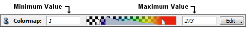

This port provides a connection to a colormap object. Like the PortColormap, this port has a user interface and the contents of the connected colormap as well as its range are shown. The port also has an Edit context menu (that pops up when pressing the right mouse button over the colormap area of the port).
In contrast to the PortColormap, the shared port has the property to propagate the colormap connected to an object to all other objects that have a PortColormap and that are connected to the object possessing the shared port.
If a colormap is connected to the object, it appears in the port. Otherwise, only the Edit button is visible. The Edit context menu items are similar to the ones in the PortColormap, except for the Disable colormap item, which leaves the object connected to no colormap. There is no concept of Constant colormap for the PortSharedColormap.

See also: PortColormap, Colormap, ColormapEditor
Inherits all commands of PortColormap.